Vamo surge como resultado de observar y vivir los diversos problemas de transporte público en la ciudad de Lima. Nuestra ciudad tiene un sistema de transporte desconectado, cuyo organismo central de control (Autoridad de Transporte Urbano o ATU) recién fue instituido en el año 2019 y aún no logra tener autoridad sobre todas las ramas relacionadas al sistema debido a problemas con la Municipalidad de Lima.
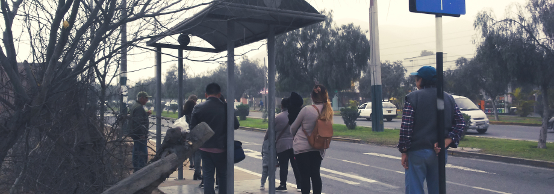
Figura 1: Personas esperando a un bus en un paradero del Corredor Rojo.
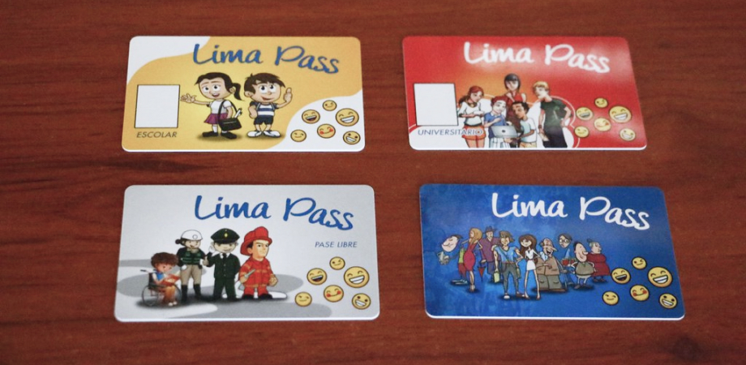
Figura 2: Tarjetas pertenecientes a los Corredores. De derecha a izquierda, arriba a abajo: Escolar, Universitaria, Preferencial (para Policías y Bomberos), General.
Esta desconexión daña principalmente al ciudadano común y corriente. que utiliza el transporte público en promedio 3 veces al día, y pasa aproximadamente 40 minutos diarios* en viajes en micros, buses, combis y trenes eléctricos de diversas empresas. En Lima, solo tres de estos sistemas pertenecen a la ATU.
Estos tres sistemas funcionan por medio de pagos con tarjetas pertenecientes a cada servicio, o en ciertos casos especiales, con dinero en efectivo. Es posible utilizar las tarjetas de los Corredores Complementarios en el Metropolitano y viceversa, pero no es posible utilizar las tarjetas del Tren Eléctrico en ningún otro sistema.
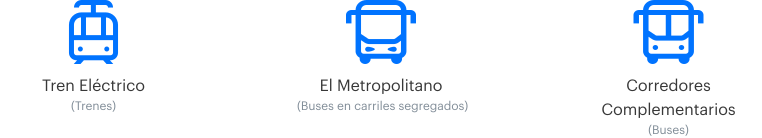
Figura 3: Sistemas de transporte urbano limeño.
El Problema
Muchos servicios posibles para mejorar el sistema de transporte público para sus pasajeros no han sido implementados. Si bien el uso de tarjetas ha acelerado los momentos de embarque a los vehículos, siguen habiendo pequeños problemas que causan interrupciones y desorden en los viajes diarios de las personas. Entre estos, los principales son:
No conocer los sistemas de transporte público en su totalidad, sus rutas, y sus conexiones.
No poder viajar por que no tienen saldo en tarjeta.
No poder recargar fácilmente.
Desconocer de cuanto saldo tienen en los momento más necesarios.
Interrupciones sorpresa en sus viajes diarios.
Las Recargas
El problema de la recarga es el más resaltante. Estas, por el momento, funcionan solo en persona en ciertos paraderos clave - usualmente los de mayor tráfico. Si bien esto satisface a bastantes usuarios, aumenta los tiempos de espera en ellos, sobre todo en horas punta. Además, según una encuesta realizada, la mayoría de los usuarios recarga cerca de 5 soles en sus tarjetas por recarga, el equivalente a 3-5 viajes, dependiendo del servicio o la ruta utilizada.
Esto desencadena en otro problema común - pasajeros dándose cuenta que no tienen saldo solo cuando suben al bus y su tarjeta no funciona. Muchas veces esto es solucionado pagando el pasaje correspondiente a otro pasajero para que este pase su tarjeta una segunda vez, pero en ocasiones, a falta de sencillo, esto es imposible, y el pasajero debe realizar el proceso de recarga en un paradero habilitado, una de las tiendas habilitadas para realizar recargas, o tomar un método alternativo de transporte. Obviamente, esto causa una pérdida de tiempo para él, que en momentos clave - como la salida mañanera al trabajo o centro de estudio - puede ser grave.
Alcance y Objetivo del Proyecto
El desarrollo del proyecto se enfocó mayormente en el desarrollo de un aplicativo que integre los tres sistemas del ATU dentro del mismo, que permita a sus usuarios recargar sus tarjetas a su comodidad, planear sus viajes usando el transporte publico limeño y tener información clara de rutas y noticias a su disposición. Además, se decidió integrar los paraderos físicos en el sistema para poder distribuir información de los buses y trenes existentes de mejor forma, mediante infografías.
Los objetivos principales fueron, entonces:
Crear una plataforma y sistema que integre los 3 sistemas de transporte público existentes y que los haga accesibles para los usuarios promedio.
Conectar y ver la información de sus tarjetas.
Recargar sus tarjetas fácilmente.
Tener información actualizada del sistema a la mano.
Mejorar sus viajes diarios.
Plan de Desarrollo
Para iniciar, se empezó con una investigación de los usuarios del sistema. Se realizaron dos encuestas, la primera para realizar una vista general de los hábitos de uso y preferencias del usuario, y la segunda para obtener información y opiniones más profundas de los usuarios, además de medir su preferencia frente al uso de un aplicativo.
A partir de estas, se observó que mientras que un aplicativo podría ofrecer muchas facilidades al usuario, otras medidas eran necesarias, sobre todo para usuarios mayores que no dependen tanto de la tecnología, y para usuarios nuevos que no son muy familiares con el sistema de transporte público. Para ellos, se observó la necesidad de generar piezas materiales para colocar en paraderos o cerca a ellos.
Además de la creación de un aplicativo, se decidió agregar ciertas piezas extra para facilitar el sistema y expandirlo a sistemas tangibles, como infografìas para los paraderos, un sitio web en prototipo, y una posible propuesta para agilizar recargas en estaciones de metropolitano, tren, o puntos de recarga extras.
Así, a partir del debrief se realizó un user persona que englobe ciertas características del usuario - en este caso universitario - para observar sus metas y necesidades con respecto al transporte público.
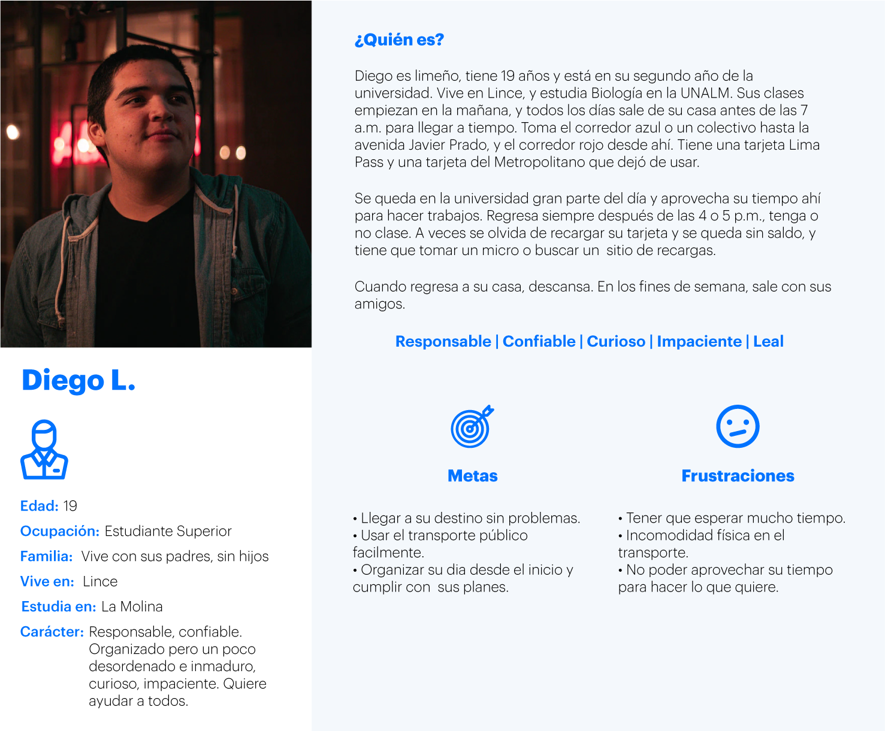
Figura 4: User persona creado para Vamo.
Finalmente, se realizó una lista de funciones posibles para la aplicación, la cual fue jerarquizada para determinar un MVP y funciones alternas útiles.
El Aplicativo
Al realizar el debrief de la segunda encuesta, se observó que una gran parte de los usuarios más dispuestos a utilizar un app para el transporte público eran estudiantes, desde escolares hasta universitarios y técnicos. Por eso, ellos fueron tomados como una muestra sobre la cual generar un MVP, al verse más dispuestos de utilizar un app y tener familiaridad con la tecnología usada.
Must Have
Login/ Conexión de tarjeta(s) con app
Recarga de tarjetas
Saldo de tarjetas
Notificaciones y actualizaciones del sistema
Mapas de rutas de Corredores y Metropolitano
Info de paraderos y puntos de servicio.
Should Have
Creador/planeador de rutas
Alertas de bajada en paraderos (configurable con planeador de rutas)
Seguimiento de buses con GPS
Recomendaciones para mejorar viaje (con info de dinero o tiempo ahorrado mediante mejoras)
Could Have
Calculadora de viajes posibles con saldo disponible
Recargas recurrentes, que se configuren para que se recargue una cantidad cada mes en un día seleccionado
Pago sin contacto
Would be Cool
Registro de objetos perdidos dentro del app.
"Grupos" familiares, manejar tarjetas para una familia
Compartir saldo con otros (¿a través de pago sin contacto?)
Capacidad de los buses que vienen
A partir de estas funciones, se crearon 5 secciones principales para el app. La configuración final fue la siguiente:
Figura 5: Íconos de las secciones del app.
Además, se creo un flujo de las secciones prinicipales, identificado las funciones claves dentro del mismo.
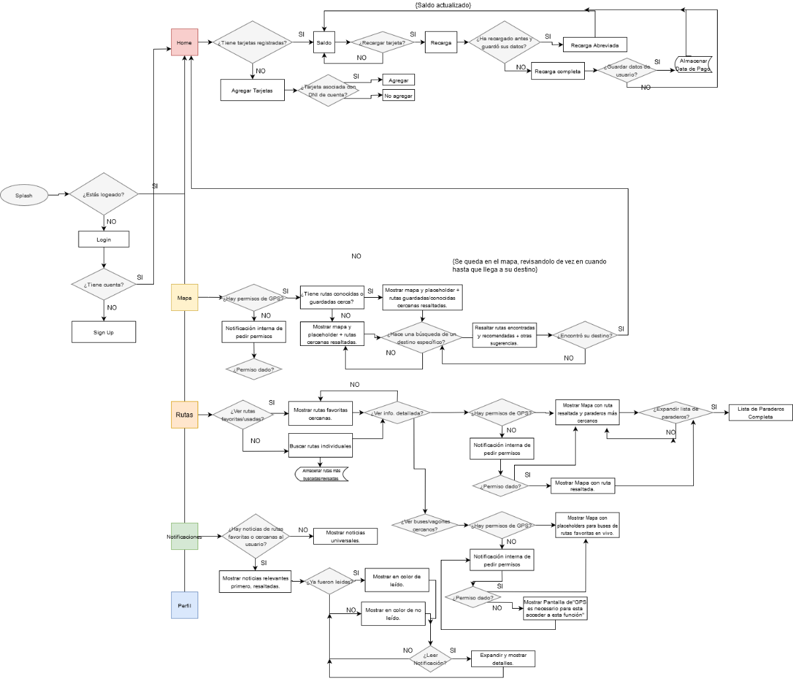
Figura 5: Flowchart de las funciones principales de Vamo.
A partir de eso, se generaron wireframes para las pantallas más importantes. El desarrollo inició con las pantallas de recarga, que fueron desde el inicio determinadas como las más importantes.
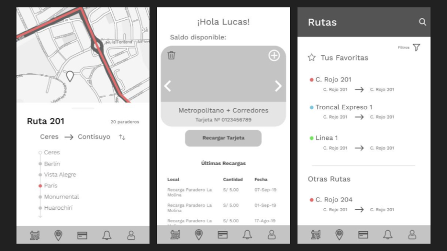
Figura 6: Wireframes iniciales de algunas pantallas principales. De izquierda a derecha, Detalle de Viaje, Home y Rutas.
Una vez creados los wireframes funcionales, se desarrolló la imagen de la marca, y se creó un sistema simple para crear un aplicativo fácil de leer y usar, complementado por íconos claros que corresponden a cada uno de los servicios existentes.
El logotipo fue creado para que sea legible y fácil de adaptar a formatos pequeños, y “Vamo” se refiere a la palabra “vamos” dicha de forma casual.
Y finalmente, los colores principales fueron aplicados a botones y señales utilizadas para resaltar cierto contenido informativo relevante al usuario.
Figura 7: Guía de estilo para los componentes del app.
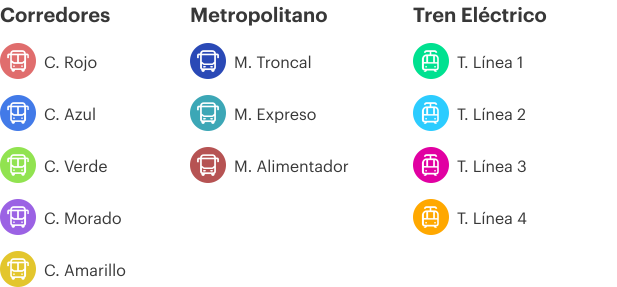
Figura 8: Íconos para los sistemas de transporte manejados en el aplicativo y el logotipo de Vamo (con variantes).
Las pantallas finales se crearon después de crear una imagen clara para el aplicativo (que seria usado para el resto de las piezas del sistema).
Sistemas Complementarios
Para complementar el aplicativo prototipado, se desarrollaron piezas tanto tangibles como digitales. Se plantearon un sitio web, una interfaz para los módulos de recargas en paraderos, estaciones, tiendas, kioskos y bodegas, e infografías y mapas para paraderos.
La idea general era poder crear un sistema completo que mejore la experiencia de los pasajeros de los diversos tipos de transporte que sea fácil de leer e identificar y único, que pueda ser usado en todas las estaciones de todos los sistemas.
Sitio Web
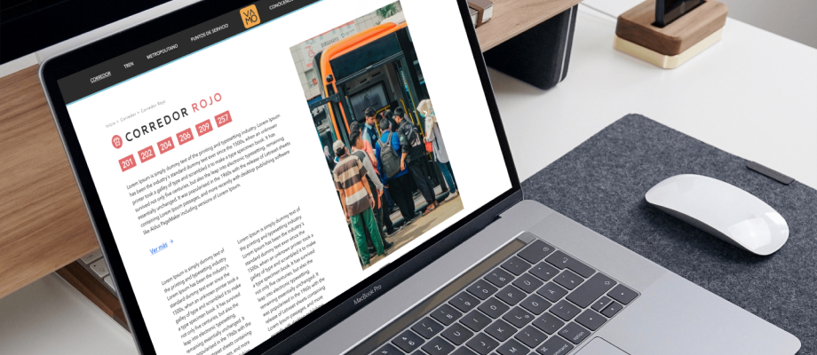
Figura 10: Mockup de la página web.
La web fue creada con la idea de que esta funcione como el centro de información clave y desarrollada sobre los distintos sistemas, sus rutas, su funcionamiento y sus conexiones. Además, debe funcionar como un repositorio de noticias e información técnica y de transparencia para la administración de los diversos sistemas - unificado bajo una imagen.
Asi, se dividió en ciertas secciones:
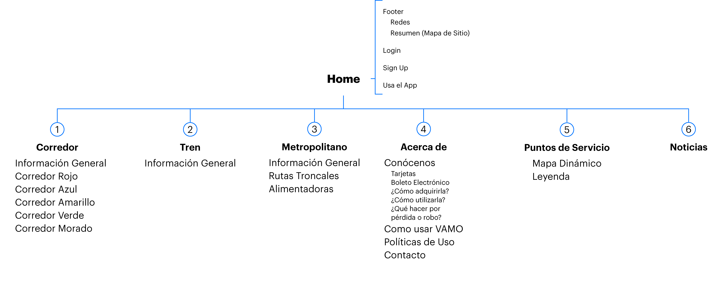
Figura 11: Mapa de sitio de la página web de Vamo.
Algunas de las páginas clave se enfocaron en señalar las rutas existentes y se desarrolló un centro para noticias al cual se puede referir desde la aplicación.:
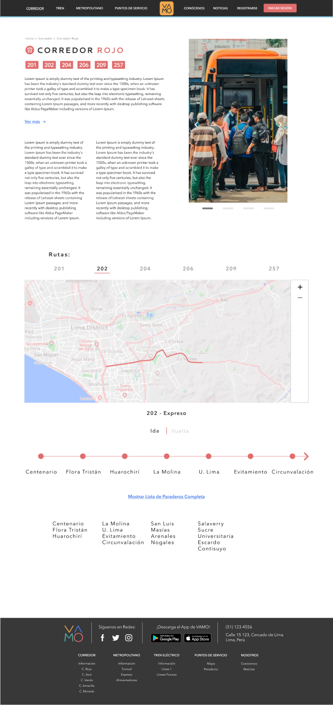
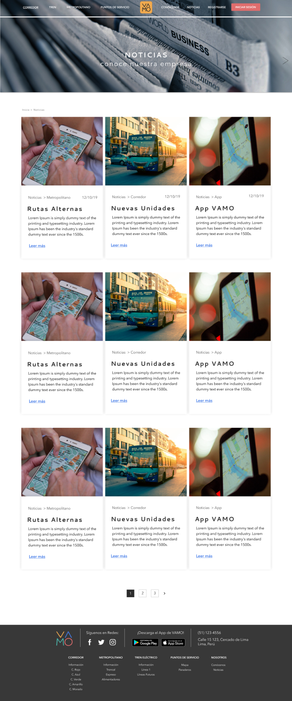
Figura 12: Páginas de información sobre una de las rutas del sistema y de noticias.
P.O.S
Como parte del sistema integrado, desarrollé una propuesta para un sistema que se debía integrar en máquinas de recarga en paraderos, kioskos y otros sitios de acceso cotidiano. Estas se inspiraron en máquinas existentes en el sistema del Metropolitano, pero con una interfaz más amigable y fácil de usar.
Figura 13: Flujo de recarga con el P.O.S que se integraría en estaciones y paraderos.
Infografías
Las infografías fueron creadas para complementar y promocionar el aplicativo en paraderos de los tres sistemas escogidos, y se enfocaron en mostrar las diversas rutas de los sistemas existentes de forma sintetizada, además de información relevante al pasajero como precios de los pasajes, horarios de funcionamiento, como reconocer al bus correspondiente, en que paradero se encuentran, etc.
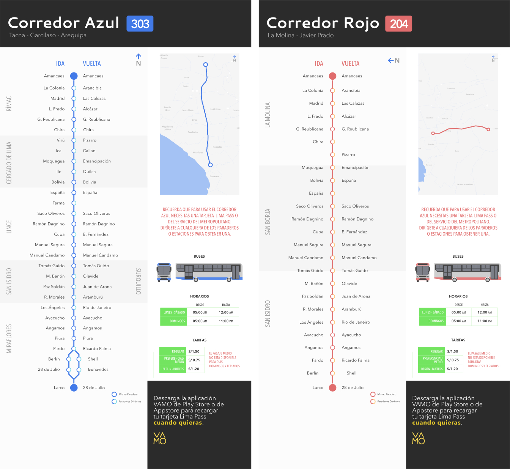
Figura 14: Infografías pertenecientes a dos rutas de corredores concurridas: 303 del Corredor Azul y 204 del Corredor Rojo. La misma estructura visual se usaría para otras rutas.
Se realizó un mockup simple de como deberían ser implementadas en los paraderos:
Figura 15: Vista de un paradero del Corredor Azul con infografías integradas en el mismo.
Resultados y Aprendizaje
Es claro que el sistema de transporte limeño está lejos de ser perfecto. La función del proyecto nunca fue solucionar sus grandes falencias - sino ofrecer una forma simple para navegarlo día a día desde la perspectiva del usuario, con un enfoque deliberadamente estrecho. Creo que esto tuvo buenos resultados, pues durante las pruebas de usuario, las personas con las que se realizaron entrevistas mencionaron en diversos momentos que el aplicativo les solucionaría muchos problemas muy pequeños pero repetidos que tienen seguidamente, y mostraron alivio al encontrar ciertas opciones como el medidor de capacidad de buses, o listas de paraderos para las rutas.
Si bien la efectividad del aplicativo no es medible pues nunca se envió a una fase de desarrollo, los usuarios que probaron el prototipo reportaron que era fácil de usar. y valoraron las funciones que se ofrecen. También sugirieron otras, o comentaron con interés en algunas funciones propuestas pero no prototipadas. Entre ellas resaltan:
La capacidad de compartir saldo de tarjetas con alguien más
Pagar para una recarga usando saldo del teléfono celular (pre-pago)
“Grupos” familiares, para poder guardar y recargar tarjetas de sus miembros de familia.
Finalmente, me parece importante resaltar que cualquier valor que pueda ofrecer este o un aplicativo similar debe ser reforzado institucionalmente y sistemáticamente, mejorando y aumentando la cobertura del servicio de transporte público de la ciudad. Si quedó algo en claro mediante la investigación realizada para este proyecto, es que queda mucho camino por cubrir en términos de servicio, cobertura de demanda, accesibilidad e infraestructura para crear un sistema de transporte público que sea realmente útil para la persona común y corriente.